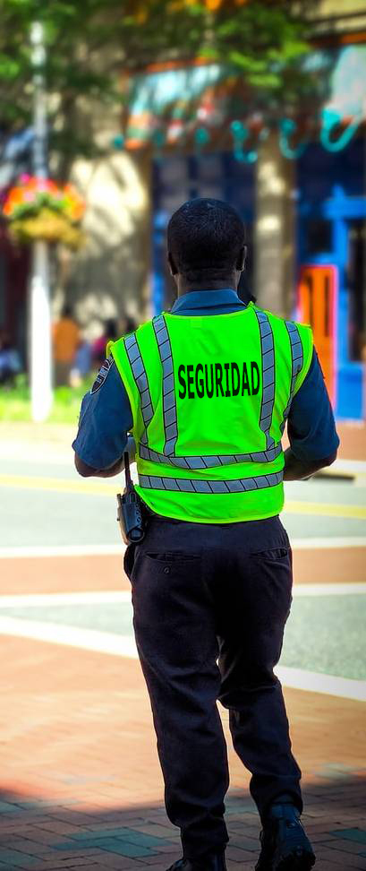

Contamos con asesores autorizados por el OS10 de Carabineros para el apoyo y confección de diferentes planes de seguridad. Entre estos destacan el desarrollo de estudios y diagnósticos de seguridad, la prevención de acciones riesgosas, confección de manuales de procedimiento y protocolos de acción, directivas de funcionamiento.
Personal rigurosamente seleccionado, con cursos OS10 al día, correctamente uniformados, con énfasis en la presentación personal e imagen corporativa, permanentemente reforzados con charlas sobre labores propias del cargo.
Cursos de formación y reentrenamiento para Vigilantes Privados y Guardias de Seguridad, que permiten reforzar los conocimientos del personal y su capacidad de acción frente a diferentes eventos y contingencias, potenciar aptitudes y conductas para un adecuado desempeño en el cargo. Contamos con profesionales altamente capacitados y autorizados por parte del OS10 de Carabineros de Chile.
Prime Soluciones, Subcontratación, Seguridad y Aseo Ltda., es una empresa administrada por personal de gran experiencia, capacitados para atender sus requerimientos, proporcionándoles la calidad y el confort que sus dependencias necesitan.
El objetivo principal es satisfacer sus necesidades de servicios de aseo, ya sea en el área industrial, comercial, hospitalaria, laboratorios, colegios o entidades públicas. Para esto, contamos con un destacado grupo de personas especialistas y preparados para realizar las labores requeridas y satisfacer las necesidades de aseo que su empresa, oficinas o dependencias en general requieren.
Por otra parte, ofrecemos una gran variedad de alternativas para tu empresa, aseo integral desde una vez por semana a un servicio de horario completo. Nos acomodamos a tus requerimientos y ofrecemos así una amplia línea de servicios y actividades.


Frente a los desafíos estratégicos que imponen la modernidad y el mercado, Prime Soluciones, Subcontratación, Seguridad y Aseo Ltda. pone a su disposición una amplia gama de profesionales, técnicos y operarios, que podrá externalizar y confiar a nosotros. Nuestra base de datos cuenta con:
Contadores auditores, Ingenieros comerciales, Administradores, entre otros.
Contador general, secretarias, electricistas, electrónicos, soporte técnico, entre otros
Cajeros, bodegueros, reponedores, grueros, operadores telemarketing, vendedores, ayudantes, entre otros.